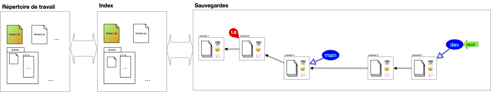

Usages
TBD plan
Faire évoluer le projet : commits et diff
L'utilisation courante d'un système de gestion des sources est de faire progresser une branche donnée par des commits successifs sur celle-ci.
L'évolution est caractérisé par les différences entre le parent et l'enfant :
Définition
On appelle diff entre deux commits les différences entre eux :
- les fichiers présent dans un commit et pas dans un autre
- les lignes différentes dans un fichier présent dans les deux commits
Suivre le diff d'une évolution allant de la branche actuelle au premier commit montre itérativement les modifications apportée au court du temps. Cette notion de diff est cruciale pour comprendre comment on peut manipuler et fusionner plusieurs commit entre eux.
Travailler avec des Branches
Les branches et leurs historiques représentent les lignes de développement du projet et sont par là les uniques moyens d'accéder à la structure de sauvegarde (hors maraboutage expert pour réparer une bêtise).
Chaque branche a ainsi une raison d'être : branche principale, de développement d'une feature particulière, d'un participant, ... Il n'y a pas de règle particulière sur ce que représente une branche mais elle doit avoir une signification pour l'équipe. Enfin une branche devenue inutile doit disparaître (il suffit de supprimer la référence).
À retenir
L'historique d'un projet doit contenir uniquement ce qui est nécessaire pour comprendre son état actuel, c'est à dire ses branches (l'état actuel) et leurs historiques, le reste est inutile.
Parmi toutes les branches, la branche main est celle qui va contenir la branche de développement principale.
Switch
Changer de branche est simple, il suffit de déplacer le pointeur HEAD d'une branche à l'autre. N'hésitez pas à créer de nouvelles branches pour tester des fonctionnalités et :
- les faire disparaître si l'idée n'aboutie pas
- la fusionner avec une branche principale si l'idée s'avère bonne
Fusion de branches
La fusion de branche (merge), consiste à rassembler le contenu de plusieurs branches en une seule. Cette opération se fait en plusieurs étapes, illustrons la en prenant l'exemple classique de la fusion de la branche de développement sur la branche principale.
1. Position de départ
On vient de terminer le développement de la branche de développement actuelle et on veut la combiner à la branche principale :

2. branche accueil
Pour effectuer la fusion, on commence par se placer sur la branche qui va accueillir la fusion, ici la branche principale :
On remarque qu'il y a deux différences :
- le fichier
fichier2.txtn'existe pas dans la branche principale - le fichier
fichier1.txtest différent pour les 2 branches
3. fusion des deux branches
La fusion peut maintenant être effectuée. On procède comme suit :
- on détermine l'ancêtre commun le plus récent entre les 2 branches à fusionner : ici le commit ayant pour tag
1.0(dans certains cas pathologique il peut y avoir plusieurs possibilité et dans ce cas on en prend un au hasard) - on effectue le
diffentre l'ancêtre commun et chacune des branches à fusionner : ceci donne les différences entre les 2 évolutions - on combine ces différences en une nouvelle évolution
- on effectue le commit de la fusion
À la fin de ces 4 étapes, on se trouve dans la position suivante :

Définition
Ce type de fusion est appelée 3-way merge car il prend en compte 3 commits différents : les 2 branches à fusionner et l'ancêtre commun.
Lorsque l'ancêtre commun est un des 2 commit, par exemple si l'on veut maintenant fusionner la branche dev et et la branche main, tout devient plus simple : il suffit de déplacer la branche ancêtre sur la branche descendante sans nécessité de créer un nouveau commit :

Définition
Ce type de fusion est appelée fast-forward merge (ou rarement 2-way merge) : une branche à fusionner est l'ancêtre commun.
Rebase
Le principal soucis avec la fusion de branche est qu'elle va induire des commits ayant 2 parents. L'historique des commits ne sera alors plus linéaire et sera plus difficile à visualiser. On peut palier ce problème en utilisant une opération de rebase. Cette opération se fait en plusieurs étapes, illustrons la en prenant l'exemple classique du rebase de la branche de développement sur la branche principale.
1. Position de départ
Tout commence comme un merge. On vient de terminer le développement de la branche de développement actuelle et on veut la combiner à la branche principale :
Cependant, contrairement à un merge on peut placer les modifications de la branche dev après la branche main. Pour cela, on commence par déplacer le pointeur HEAD sur le commit de la branche d'accueil, ici la branche principale :

On remarque qu'il y a deux différences :
- le fichier
fichier2.txtn'existe pas dans la branche principale - le fichier
fichier1.txtest différent pour les 2 branches
2. Rebase
Puis, à partir de l'ancêtre commun, les diff des commits (avec leurs ancêtres) de la branche dev sont rejoués sur la branche main. Notez que l'on ne peut pas juste déplacer les commits puisque l'on veut combiner la branche main aux modifications (diff) effectués par la branche dev :

Enfin :
- la branche
devest placé sur le commit du pointeur courant - le pointeur courant est replacé sur la branche
dev

Les précédent commits de la branche dev avant rebase ne sont plus accessibles via une branche mais sont par défaut toujours présent dans la structure de sauvegarde (qui garde tout).
Définition
On appelle rebase d'une branche $A$ sur une autre $B$ le fait de rejouer les diff des commits de la branche $A$ sur la branche $B$ depuis leur ancêtre commun.
A priori les commit résultant d'un merge (ceux ayant plus d'un parent) ne sont pas concernés par le rebase puisqu'il sont déjà eux même des combinaisons de commits existants.
Nettoyage de base
Les commit que l'on ne peut plus atteindre via une branche ou son historiques sont inutiles. On peut donc : soit les ignorer soit les effacer de la base. 7 Dans le cas général on ne fait que les ignorer et de représenter uniquement la DAG "utile". Par exemple après un rebase, on représentera plutôt l'arbre suivant que le précédent :

Origin
Que l'on travaille à plusieurs ou seul, posséder une version "partageable" de la structure de sauvegarde est appréciable. Parmi tous les avantages, on peut citer :
- de synchroniser les changements lorsque l'on travaille en équipe,
- de permettre à des personnes tierces d'utiliser le projet en le clonant et de proposer des amélioration via des pull request
- de cloner un projet qui nous intéresse
- ...
Un projet peut-être en lien avec de nombreuses copies distantes de celui-ci, que l'on appelle remote. Le projet y accède via son url (adresse internet ou dossier sur le même disque dur).
Clone
Lorsque l'on travaille à plusieurs sur un projet on a coutume de partager, en plus de sa structure de sauvegarde personnelle, une structure commune nommée origin par convention qui regroupe les branches utiles à tous. Pour cela, on commence par désigner la structure de sauvegarde partagée que l'on appelle origin. Ensuite, chaque participant au projet le clone :

L'opération de clonage effectue les opérations suivantes :
Définition
L'opération de cloner un projet consiste à :
- copier sa structure de donnée
- associer
originà l'url de l'origine dans la copie - si le pointeur HEAD de l'origin est sur une branche, la créer dans la structure copiée
- placer le pointeur HEAD de la copie au même endroit (commit ou branche) que l'origine
- garder une références de toutes les branches de l'origine
On remarque que l'on a besoin que de la structure de sauvegarde pour l'origine, l'index et le répertoire de travail sont inutiles.
L'opération de fork ressemble au clonage mais le but est différent. Dans un clonage tous les participants interagissent directement avec l'origine, alors qu'un projet résultant d'un fork peut être vu comme un nouveau projet (il n'est pas en relation directe avec le projet initial).
Branches locales et distantes
Après un clonage, la structure de sauvegarde locale contient, en plus du DAG des commits de l'origin, des références à la structure origin et à ses branches. Les branches de l'origin sont dites distantes (remote). Notez que si la copie contient un lien vers l'original le serveur origin n'a lui aucune information de la copie locale, il ne sait même pas qu'elle existe.
Au cours du temps de l'évolution des branches sur la sauvegarde locale et distantes ces informations peuvent diverger :
- des commits peuvent insérées sur la copie et sur l'origine
- des branches peuvent être crées sur la copie et sur l'origine
On se retrouve alors dans la configuration suivante :

Comme l'origine et la sauvegarde locales ont évoluées chacune de son côté des commits ont été ajouté depuis leur dernière synchronisation mais comme on a fait qu'ajouter des commits et des références il est possible de synchroniser les deux structures.
Pour cela, on commence par synchroniser la sauvegarde distante avec la sauvegarde locale, puis on envoie les évolutions locales vers l'origine.
Synchronisation de branches distances vers locales
La synchronisation se fait branche à branche. Dans l'exemple la sauvegarde locale suit deux branches distantes, origin/main et origin/dev. La branche feature n'est pas suivi, on ne s'en occupe donc pas : la sauvegarde locale n'est pas au courant qu'elle existe.
Seule la branche origin/main à divergé. Pour la synchroniser on commence par récupérer les divergences (on ne montre plus que la sauvegarde locale) :

On a maintenant deux possibilités pour effectuer la synchronisation.
Merge origin/main et main

Rebase main sur origin/main

C'est cette solution qui est à privilégier car elle garde un historique linéaire, plus facile à lire.
Les commits locaux sont réécrit. Il ne faut pas faire de rebase si les commits initiaux étaient déjà sur le serveur origin. Cela causerait d'énorme problèmes aux autres utilisateurs qui référenceraient des commits qui ne sont plus accessibles (voir ci-après).
Synchronisation de branches locales vers distantes
Une fois les synchronisations de l'origine vers le serveur locales terminées, la synchronisation vers l'origine est aisée c'est un fast-forward :

Interagir avec l'origin
TBD écrire joli.
Quelques règles d'usage lorsque l'on participe à un projet avec une origine :
- l'origin ne sait pas ce que l'on fait. Et il faut penser à ceux qui sont aussi connecté àl'origin (ne pas changer l'historique)
- beaucoup d'utilisateurs et trop de branches. On ne garde en local que les références des branches utiles pour nous, quite à rajouter des branches à suivre plus tard.
- commiter souvent pour éviter les conflits et les opérations lourdes de synchronisation
- ne mettre sur l'origine que les branches utiles à tous
- ne pas hésiter à avoir de nombreuses branches locales que l'on ne va pas synchroniser avec l'origin
attention réécriture d'historique n'oubliez jamais que vous travaillez à plusieurs : uniquement en local.
TBD Faire dessin du soucis avec 2 utilisateurs.
Se déplacer dans l'historique
TBD pas vraiment utile tout le temps, mais quand on en a besoin c'est vraiment utile.
- revert
- reset : les 3 façons soft/normal/hard
- cherry pick
- modifier l'historique (attention réécriture) : squash